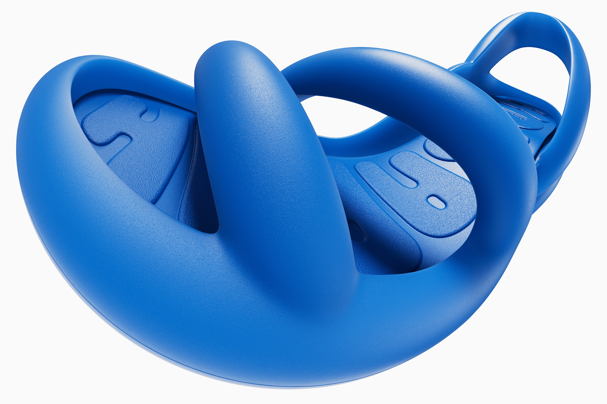
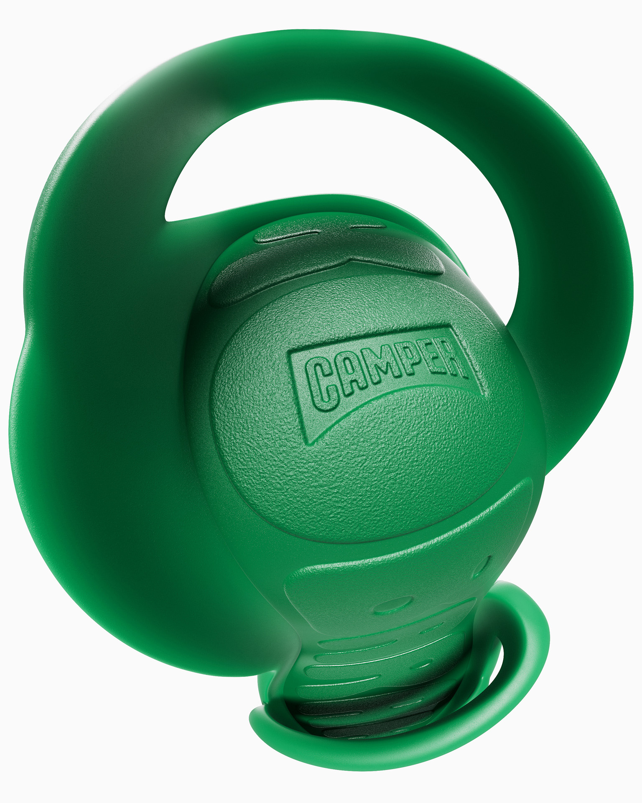
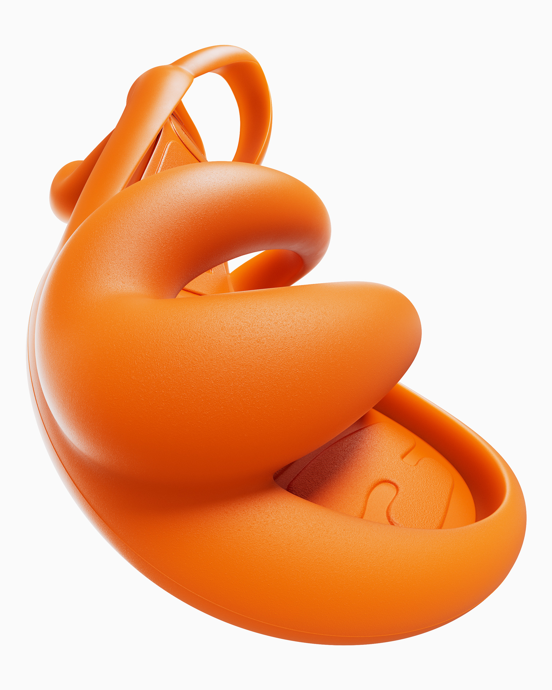
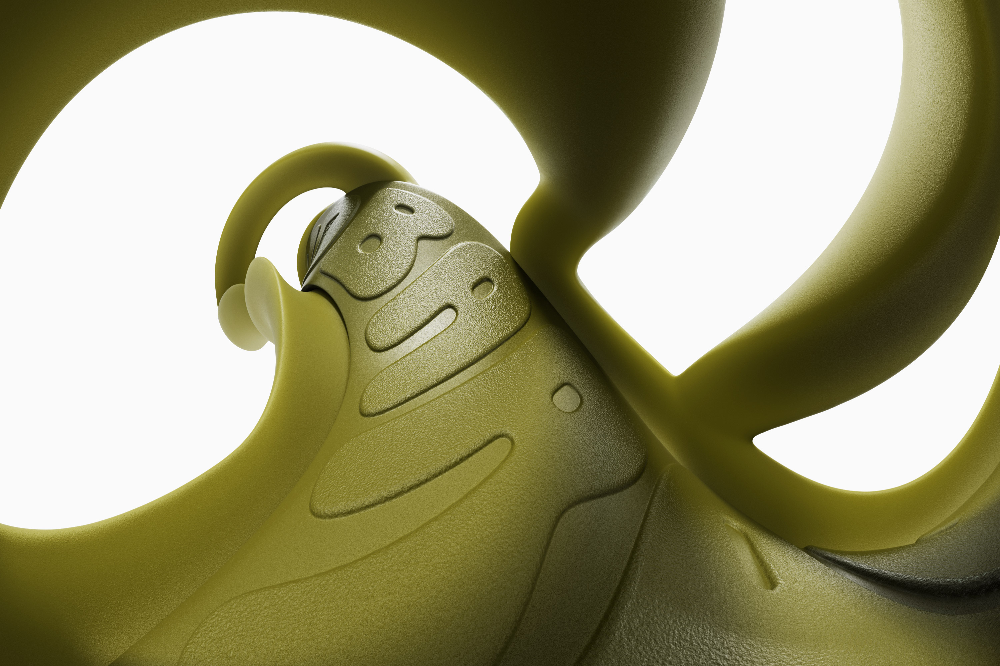
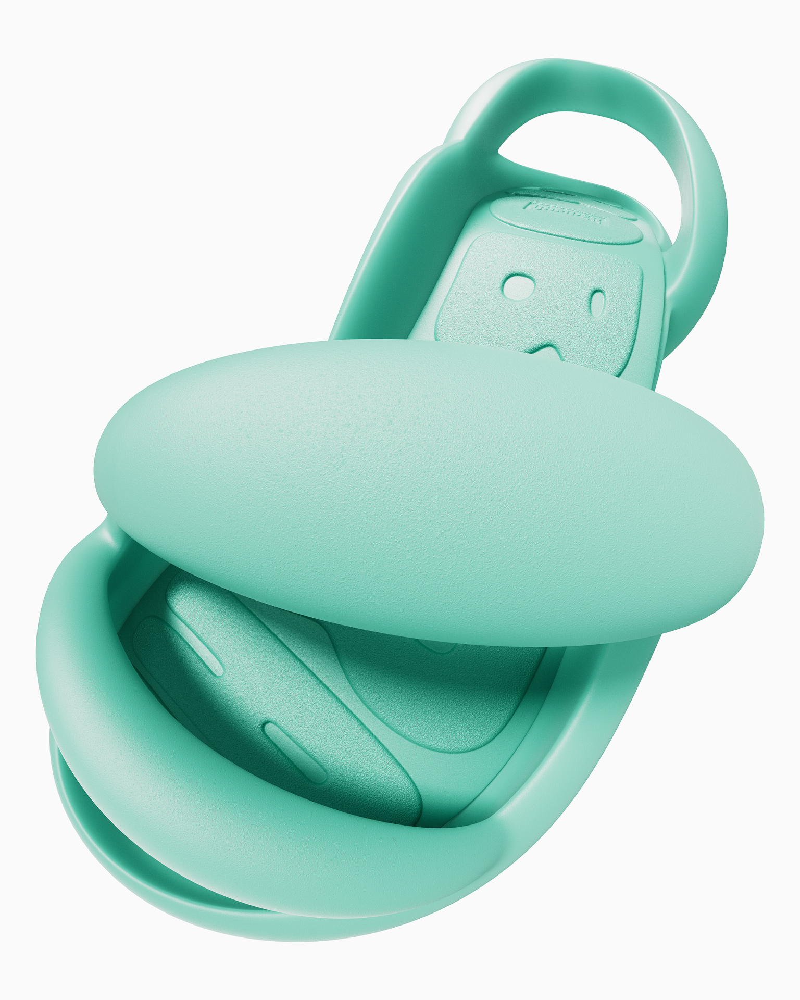
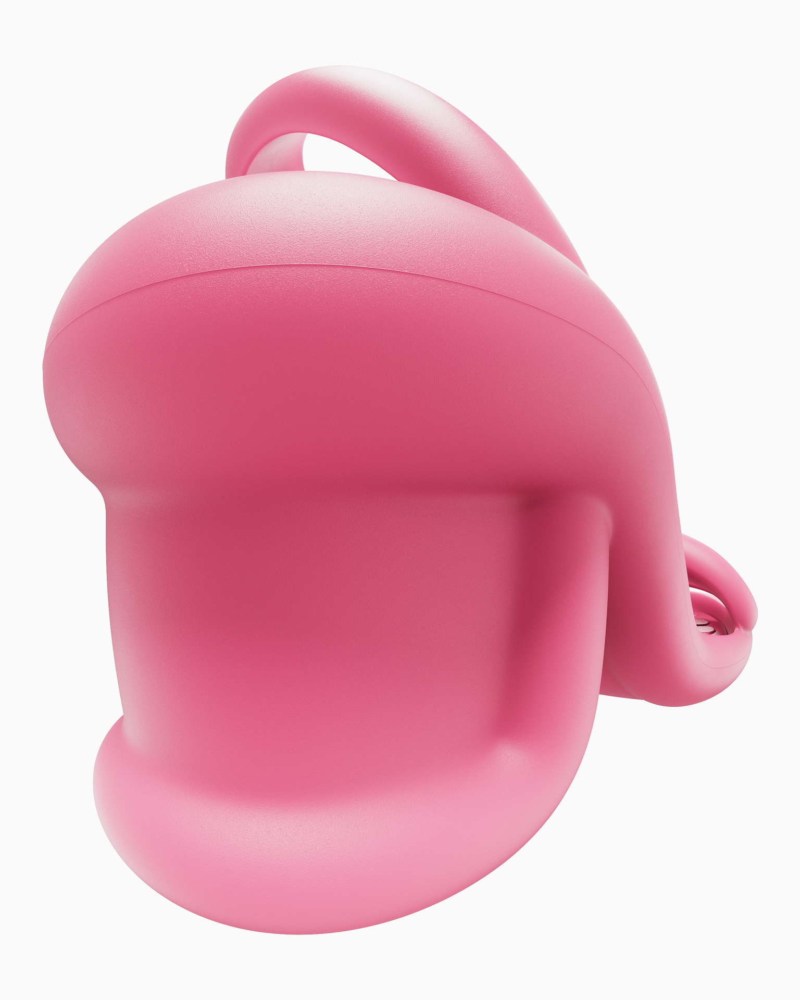

Camper Kobarah
Visual explorations using the Camper Kobarah as a subject. The goal was to highlight its maximalist quality by playing with extreme camera angles—accentuating the iconic curves in the shoe, as well as its rubbery texture and wide range of colors.
- Self-started project
- Year: 2025